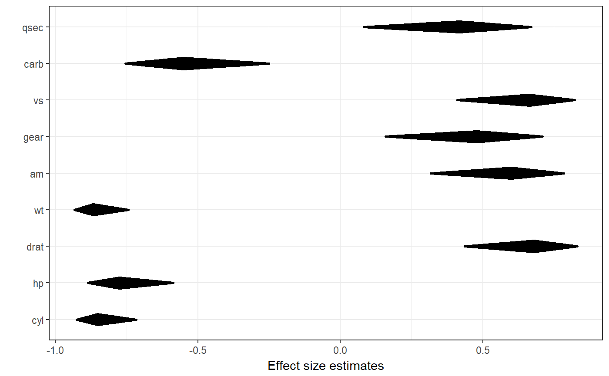
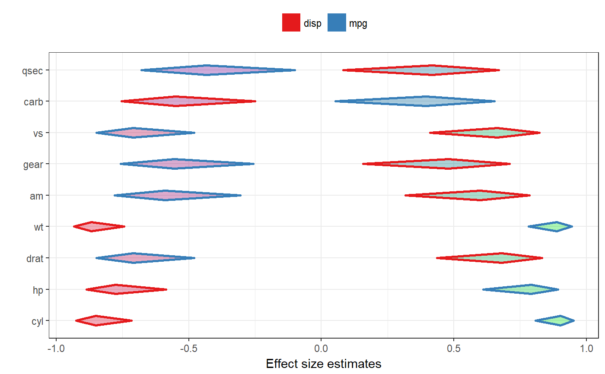

This function produces is a diamondplot that plots the confidence intervals for associations between a number of covariates and a criterion. It currently only supports the Pearson's r effect size metric; other effect sizes are converted to Pearson's r.
associationsToDiamondPlotDf is a helper function that produces the required dataframe.
associationsDiamondPlot(dat, covariates, criteria, labels = NULL, criteriaLabels = NULL, decreasing=NULL, sortBy=NULL, conf.level=.95, criteriaColors = brewer.pal(8, 'Set1'), criterionColor = 'black', returnLayerOnly = FALSE, esMetric = 'r', multiAlpha=.33, singleAlpha = 1, showLegend=TRUE, xlab="Effect size estimates", ylab="", theme=theme_bw(), lineSize = 1, outputFile = NULL, outputWidth = 10, outputHeight = 10, ggsaveParams = list(units='cm', dpi=300, type="cairo"), ...) associationsToDiamondPlotDf(dat, covariates, criterion, labels = NULL, decreasing = NULL, conf.level = 0.95, esMetric = "r")
| dat | The dataframe containing the relevant variables. |
|---|---|
| covariates | The covariates: the list of variables to associate to the criterion or criteria, usually the predictors. |
| criteria, criterion | The criteria, usually the dependent variables; one criterion (one dependent variable) can also be specified of course. The helper function |
| labels | The labels for the covariates, for example the questions that were used (as a character vector). |
| criteriaLabels | The labels for the criteria (in the legend). |
| decreasing | Whether to sort the covariates by the point estimate of the effect size
of their association with the criterion. Use |
| sortBy | When specifying multiple criteria, this can be used to indicate by which criterion the items should be sorted (if they should be sorted). |
| conf.level | The confidence of the confidence intervals. |
| criteriaColors, criterionColor | The colors to use for the different associations can be specified in |
| returnLayerOnly | Whether to return the entire object that is generated, or just the resulting ggplot2 layer. |
| esMetric | The effect size metric to plot - currently, only 'r' is supported, and other values will return an error. |
| multiAlpha, singleAlpha | The transparency (alpha channel) value of the diamonds for each association can be specified in |
| showLegend | Whether to show the legend. |
| xlab, ylab | The label to use for the x and y axes (for |
| theme | The |
| lineSize | The thickness of the lines (the diamonds' strokes). |
| outputFile | A file to which to save the plot. |
| outputWidth, outputHeight | Width and height of saved plot (specified in centimeters by default, see |
| ggsaveParams | Parameters to pass to ggsave when saving the plot. |
| … | Any additional arguments are passed to |
This function can be used to quickly plot multiple confidence intervals.
A plot.
### Simple diamond plot with correlations ### and their confidence intervals associationsDiamondPlot(mtcars, covariates=c('cyl', 'hp', 'drat', 'wt', 'am', 'gear', 'vs', 'carb', 'qsec'), criteria='mpg');### Same diamond plot, but now with two criteria, ### and colouring the diamonds based on the ### correlation point estimates: a gradient ### is created where red is used for -1, ### green for 1 and blue for 0. associationsDiamondPlot(mtcars, covariates=c('cyl', 'hp', 'drat', 'wt', 'am', 'gear', 'vs', 'carb', 'qsec'), criteria=c('mpg', 'disp'), generateColors=c("red", "blue", "green"), fullColorRange=c(-1, 1));